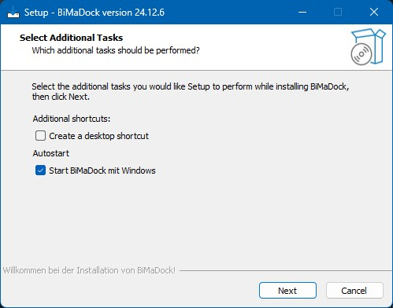
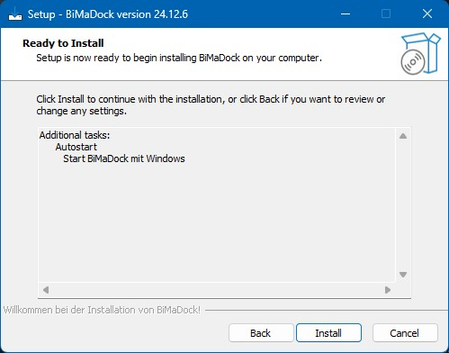
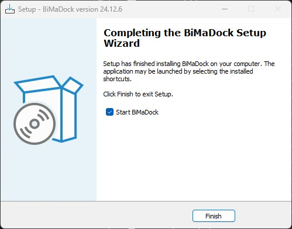

Startseite
Willkommen bei BiMaDock – Ihrer personalisierbaren Dock-Leiste für Windows!
Über BiMaDock
BiMaDock ist eine WPF-basierte Anwendung für Windows, die eine personalisierbare Dock-Leiste zur Organisation von Programmen und Dateien bietet.
Die Anwendung wurde entwickelt, um eine optisch ansprechende und funktionale Alternative zu gängigen Dock-Programmen zu schaffen,
mit modernem Design und einer intuitiven Benutzeroberfläche.
Im Fenster "Eigenschaften bearbeiten" können Nutzer den Namen und das Symbolbild der Dock-Leiste individuell anpassen,
um eine persönlichere und maßgeschneiderte Benutzererfahrung zu gewährleisten.
Funktionen
- Drag & Drop-Unterstützung: Dateien und Programme können per Drag & Drop in die Dock-Leiste hinzugefügt werden und sind direkt per Klick ausführbar.
- Automatisches Ausblenden: Die Dock-Leiste kann sich automatisch ausblenden und erscheint beim Bewegen der Maus zum oberen Bildschirmrand.
- Kategorien und Organisation: Dateien können in benutzerdefinierten Kategorien angeordnet werden, um eine saubere und einfache Struktur zu schaffen.
- Einstellungen für Design und Layout: Nutzer können Farben, Transparenz und Deckkraft der Dock-Leiste und des Einstellungsfensters nach ihren Wünschen anpassen.
- Auswahlmöglichkeit für Effekte: Nutzer können verschiedene visuelle Effekte für die Dock-Leiste auswählen.
Effekte
Es sind folgende Effekte auswählbar und frei konfigurierbar:
- Keine Animation: Keine Animationseffekte angewendet.
- Scale Effekt: Verändert die Größe der Dock-Leiste, indem sie eine Vergrößerungs- und Verkleinerungsbewegung ausführt.
- Rotate Effekt: Dreht die Dock-Leiste sanft um ihren Mittelpunkt, wodurch ein rotierender Effekt entsteht.
- Translate Effekt: Bewegt die Dock-Leiste entlang einer definierten Achse, wodurch ein gleitender Bewegungseffekt erzeugt wird.
- Swing Effekt: Lässt die Dock-Leiste wie ein Pendel hin und her schwingen und erzeugt dadurch einen schwungvollen Effekt.
Beispielvideo: Scale Effekt
Video ansehenBeispielvideo: Rotate Effekt
Video ansehenBeispielvideo: Translate Effekt
Video ansehenBeispielvideo: Swing Effekt
Video ansehenScale Effekt
Rotate Effekt
Translate Effekt
Swing Effekt
Installation
Download:
Neueste Version herunterladenInstallationsanleitung
Schritt 1: Download der BiMaDockSetup.exe
Schritt 2: Die Sicherheitswarnung kann ausgeführt werden. "Ausführen"
Schritt 3: Im ersten Schritt des Setups kann ausgewählt werden, ob eine Desktopverknüpfung erstellt und ob das Programm zum Windows Autostart hinzugefügt werden soll.
Schritt 4: Im zweiten Schritt sehen Sie eine Übersicht Ihrer Auswahl. Klicken Sie auf "Install", um mit der Installation fortzufahren.
Schritt 5: Im dritten Schritt wird das Setup beendet und Sie können auswählen, ob die Applikation sofort gestartet werden soll.
Unterstützung
Wenn Ihnen dieses Projekt gefällt und Sie mich unterstützen möchten, können Sie mir gerne eine Spende über PayPal zukommen lassen. Jeder Beitrag hilft mir, dieses Projekt weiterzuentwickeln und zu verbessern. Vielen Dank für Ihre Unterstützung!
Lizenz
Dieses Projekt steht unter der MIT-Lizenz.